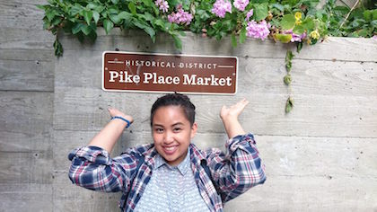
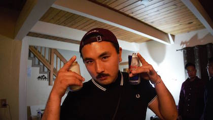

Aming Kwento
Our Story
It all started in a small kitchen on 29th and Geary, San Francisco, California. My parents emigrated to the United States in 1981 and had a rough transition into American society. There were language barriers, money was low, and customs were different. Trying to connect, my parents would open up their dining rooms to coworkers, enjoying dinners with diverse company sharing what culinary finesse they brought with them from the Philippines. They shared their culture and many enjoyed what they had to offer. Eventually, the dining rooms would swell up beyond capacity, and they knew they had to grow. They opened Kain in 1993 to continue to share that same experience. Kain hopes to inspire and share the same sentiment my parents had for us when we were growing up. Those was conversations, laughs, openness, and the celebration of good food with company.
Owner

Nicole Liston
Nicole Liston is a champion of cultural diversification and sharing, especially with her Filipino heritage. Born and raised in San Francisco, Nicole is a first generation Filipino-American from the Liston family that created the foundation of Kain. After earning her B.A. in business and M.B.A in 2010 over at Dominican University of CA, Nicole wanted to continue the tradition her parents created decades ago. Kain is that embodiment of that custom. Her hope was to create an immersive dining experience with flavors that haven’t been dealt with before by picking strong culinary practices and willing teammates to provide just that. After 7 years of serving the community, the success of the restaurant is measured through the smiles with each bite she believes.
Head Chef

Nick Ah Quin
“Subtle to the eye but explosive to the palate”/p>
Nick Ah Quin hailing from Eva Beach, Hawaii brought a new sense of culinary direction to Kain. Growing up among tropical nodes, Nick understood what flavors can integrate with Filipino cuisine. Upon graduation form the Culinary Institute in Los Angeles, CA, he began his career at restaurants in the Orange and LA County areas. Some notable places are Felix, Rossoblu, and Rosaline. After a decade in the business, Nick moved up to the Bay Area seeking to innovate Pacific Islander cuisine. His opportunity came with Kain in 2012 when he met Kevin at the SF Culinary Exposition. Much of the success to Kain is due to Nick’s careful selection of ingredients from karobuto pork to the urbani truffles.
Sous Chef
Kevin Sunga
“I just let the food speak for itself…it’s a Filipino thing, when you feed family, you make sure it’s all they want to taste next time they come to your house.”
Rice, protein, and eggs. Three ingredients that forever changed his outlook on life. Born and raised in Vallejo, California, Kevin Sunga grew up enamored with simple living, understanding that it doesn’t take much to be happy. Kevin understands the importance for simplicity in food, and set the standard for Filipino cuisine in the Bay Area. From establishing fantastic relationships with local farmers for fresh ingredients, to forming a loyal team of chefs, Kevin developed a friendly culture addicted to serving patrons unique and tasty Filipino food. For him, it wasn’t about the laurels or establishing a well-known Filipino restaurant in the mainland, but it was about stamping the Philippine culture on every dish leaving his kitchen. Consequently, the five-star quality of the menu earned his restaurant high praise amongst the numerous community members. The sky is the limit for the proud restaurateur, but currently, his food speaks volumes for the Filipino community